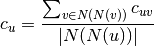
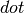
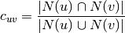
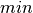
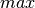
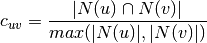

clustering¶
- clustering(G, nodes=None, mode='dot')¶
Compute a bipartite clustering coefficient for nodes.
The bipartie clustering coefficient is a measure of local density of connections defined as [R144]:

where
 are the second order neighbors of
are the second order neighbors of  in
in  excluding ,
and
excluding ,
and  is the pairwise clustering coefficient between nodes
and .
is the pairwise clustering coefficient between nodes
and .The mode selects the function for
which can be::

:

:

Parameters : G : graph
A bipartite graph
nodes : list or iterable (optional)
Compute bipartite clustering for these nodes. The default is all nodes in G.
mode : string
The pariwise bipartite clustering method to be used in the computation. It must be “dot”, “max”, or “min”.
Returns : clustering : dictionary
A dictionary keyed by node with the clustering coefficient value.
See also
robins_alexander_clustering, square_clustering, average_clustering
References
[R144] (1, 2) Latapy, Matthieu, Clémence Magnien, and Nathalie Del Vecchio (2008). Basic notions for the analysis of large two-mode networks. Social Networks 30(1), 31–48. Examples
>>> from networkx.algorithms import bipartite >>> G = nx.path_graph(4) # path graphs are bipartite >>> c = bipartite.clustering(G) >>> c[0] 0.5 >>> c = bipartite.clustering(G,mode='min') >>> c[0] 1.0